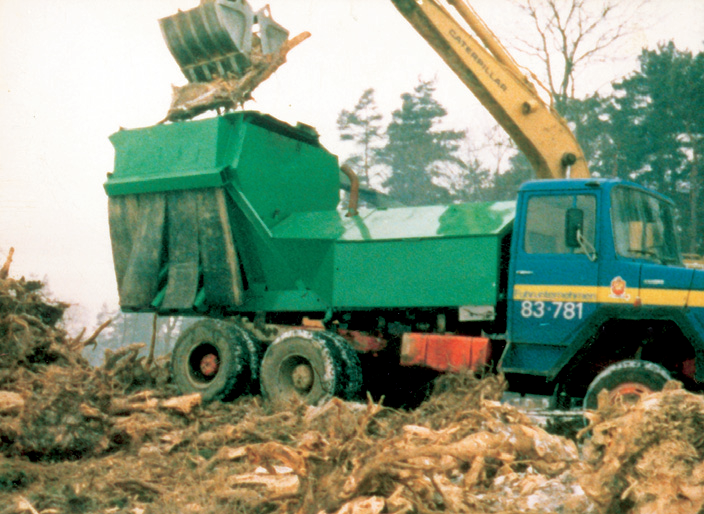
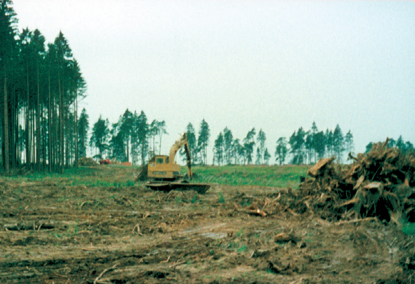
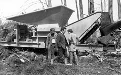
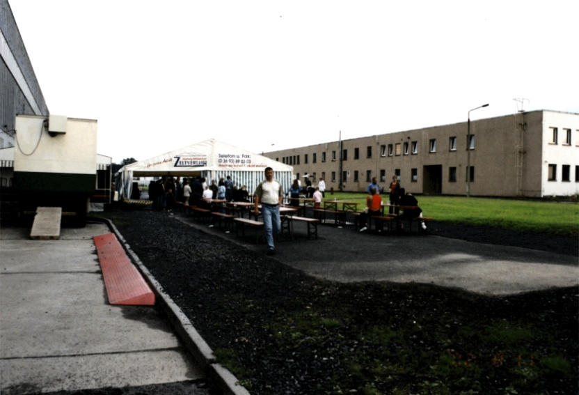
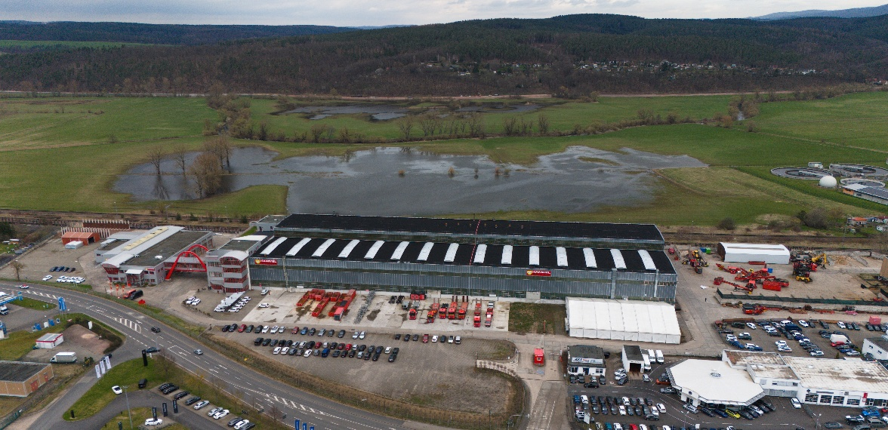
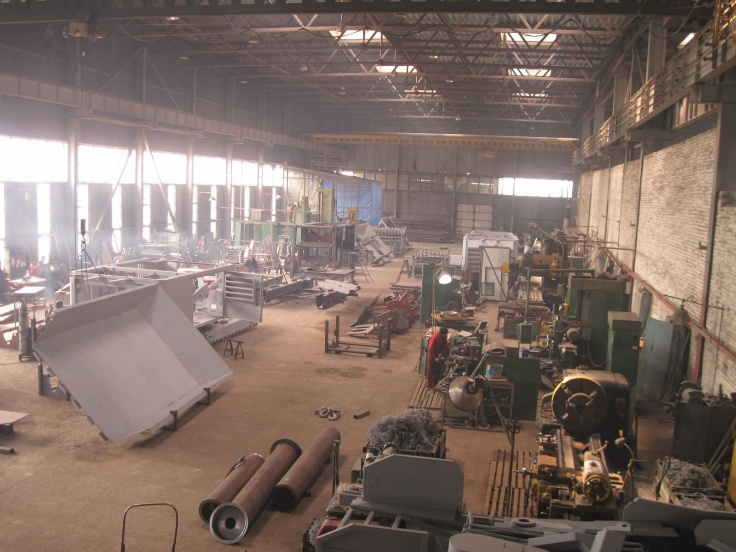
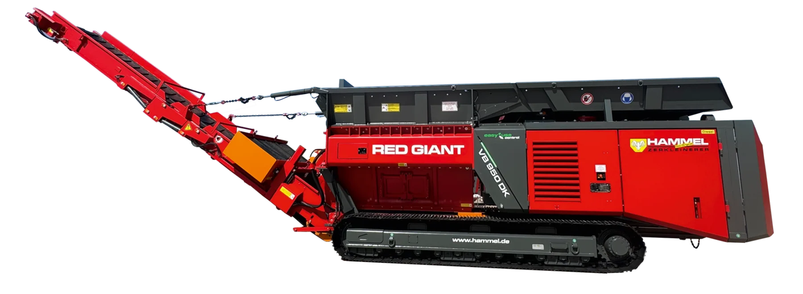
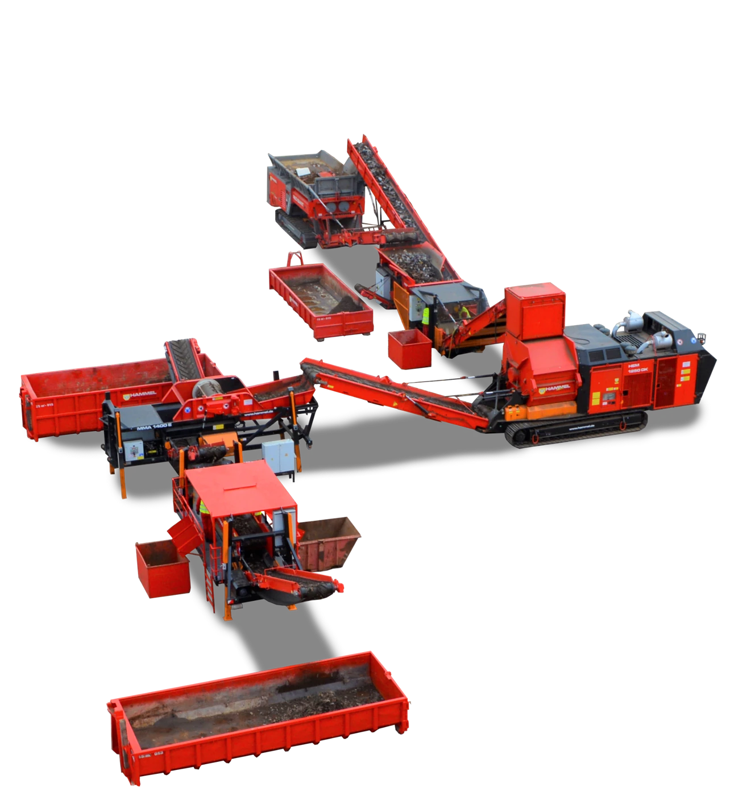
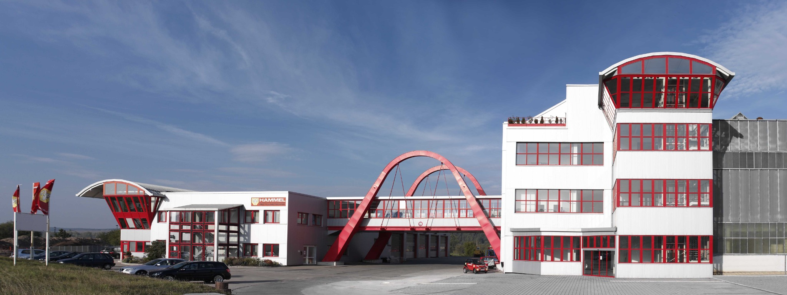

1978 bis 1979
Ein Anbaugerät für den Traktor
Zwischen 1978 und 1979 entsteht ein Anbaugerät für einen Traktor. Hier liegen die frühen Wurzeln unserer späteren Maschinenentwicklung.

Innovative Recyclingtechnik. Entwickelt in Thüringen. Weltweit im Einsatz.
MEHR ENTDECKENAngefangen hat es mit einem Anbaugerät für den Traktor. Das war 1978. Knapp zwanzig Jahre später gründen wir HAMMEL, und heute arbeiten rund 500 Menschen bei uns, in Deutschland und in der Ukraine.
Zwischen 1978 und 1979 entsteht ein Anbaugerät für einen Traktor. Hier liegen die frühen Wurzeln unserer späteren Maschinenentwicklung.

Ein paar Jahre später entwickeln wir eine Maschine, die Wurzelstöcke reinigt und aufbereitet. Wir bleiben dabei, Technik zu bauen, die in der Praxis funktioniert.

Zwischen 1986 und 1988 entsteht unser erster Zerkleinerer. Aus dieser Technik wird später der Kern unseres Maschinenprogramms.

Am 15. Februar 1996 gründen wir HAMMEL in Bad Salzungen. Wir sind zu dritt und haben eine kleine Produktionshalle. Von Anfang an wollen wir Recyclingtechnik bauen, die sich im täglichen Einsatz bewährt. Lange reicht der Platz dafür nicht.

Anfangs teilen sich Fertigung, Lackierung, Lager und Büro dieselben Räume. Als die Aufträge mehr werden, bauen wir Hallen und Lagerflächen dazu. Die Brücke, die später unsere Bürogebäude verbindet, konstruieren wir selbst. Auch an unsere Maschinen werden höhere Anforderungen gestellt.


Der VB 650 D ist mobil und fährt auf dem Hakenlift. Mit ihm entwickeln wir das Zwei-Wellen-Prinzip weiter, und daraus entsteht die Baureihe VB 750. Sie hat sich im Einsatz bewährt, und auf ihr bauen wir unser Programm auf.

Die Erfahrung aus den ersten Zerkleinerern steckt in jeder neuen Generation. Unsere Maschinen arbeiten mit ganz unterschiedlichen Materialien, mobil, stationär oder als Teil einer kompletten Anlage. Solche Anlagen zum Aufbereiten, Trennen und Sortieren planen und bauen wir ebenfalls. Das Zwei-Wellen-Prinzip bleibt dabei unsere Grundlage und eignet sich für anspruchsvolle Materialien.
Unsere Zerkleinerungstechnik basiert auf dem bewährten Zwei-Wellen-Prinzip und eignet sich für die Verarbeitung anspruchsvoller Materialien. Unsere Maschinen sind sowohl in mobiler als auch in stationärer Ausführung erhältlich und können an unterschiedliche Einsatzbedingungen angepasst werden. Darüber hinaus entwickeln und realisieren wir komplette Anlagen zur Aufbereitung, Trennung und Sortierung verschiedenster Materialien.

Mit dem Wissen aus dem Zerkleinern gehen wir in die mobile Schrottaufbereitung. Unsere Anlage nimmt gemischtes Material, zum Beispiel Autokarosserien, und trennt es in einzelne Wertstoffe. Dabei steigen die Anforderungen an Durchsatz und Leistung weiter.

Aus diesen Erfahrungen entwickeln wir unsere Maschinenfamilie weiter. Der VB 950 DK heißt bei uns RED GIANT und ist ein besonders leistungsstarker Zweiwellenzerkleinerer. Unsere Technik kommt in neue Einsatzbereiche, und der Austausch mit der Recyclingbranche wächst.
Seit 2012 sind wir Mitglied der BDSV, seit 2014 des Bureau of International Recycling (BIR). Dort tauschen wir uns fachlich mit der Branche aus und sind international vernetzt.
Unsere technischen Wurzeln reichen bis 1978 zurück, die Firma gibt es seit 1996. Heute arbeiten rund 500 Menschen bei uns. Wir produzieren in Deutschland und in der Ukraine und betreuen unsere Kunden über ein weltweites Vertriebs- und Servicenetz. Und es geht weiter.
Ihr Material, unsere MaschineWas bei Ihnen anfällt, schauen wir uns gemeinsam an. Sprechen Sie uns an.
